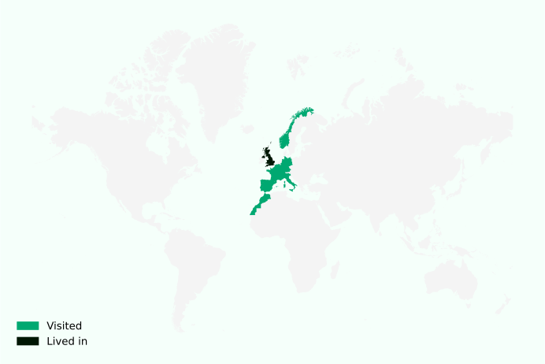

About
About me
I am a fourth and final year student of Computer Science and Mathematics at the University of Edinburgh.
In the past, I’ve worked with Ohad Kammar on implementing an ML-style module system for Idris 2, a dependently typed language. We also worked together on a probabilistic programming DSL/library in Idris, with an accompanying probabilistic music composition tool.
I also co-founded TypeSig, a student special interest group at UoE, which aims to get undergraduates interested in theoretical computer science. TypeSig runs weekly Lean workshops and regular academic talks (from the likes of Phil Wadler, John Baez and Kevin Buzzard). We also ran our very own lecture series and conference!
My main academic interests lie in programming language theory (PL), type theory, quantum computing, and category theory.
Outside of the nerd life, I enjoy synthesizers (both playing and making them), reading, and eclectic (read: bad) music. In order to truly fit the PL stereotype, I’ve recently taken up climbing.
Here’s a map of countries I’ve been to:  (you can find the script that made this image here)
About this site
You can read in detail about how this site is made in this post, but the gist is: this site is generated from a set of Org files using Hakyll (and Pandoc), and served to you via Github Pages.
I’ve used literate programming to document the CSS and JS for this site. The actual .css and .js files are generated directly from the previously linked pages.
You can also browse this site entirely from within Emacs using Org mode! Find out how here.
Any code snippets on this site are released into the public domain, except where otherwise noted. All art assets are my copyright, except where otherwise noted.